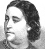

Collective Biographies of WomenAn Annotated Bibliography
Alison Booth
179.
Clayton, Ellen Creathorne [afterward Needham]. Queens of Song: Being Memoirs of Some of the Most Celebrated Female Vocalists who have Performed on the Lyric Stage from the Earliest Days of Opera to the Present Time. 2 vols., London: Smith, Elder, 1863. New York: Harper, 1864; 1865; 1867; 1869.
Search OCLC WorldCat for this title.
Search Google Books for this title.
Clayton, Ellen Creathorne [afterward Needham]. Queens of Song: Being Memoirs of Some of the Most Celebrated Female Vocalists who have Performed on the Lyric Stage from the Earliest Days of Opera to the Present Time. 2 vols., London: Smith, Elder, 1863. New York: Harper, 1864; 1865; 1867; 1869.
Bodleian Oldfield.
-
 Mrs. Billington
Mrs. Billington -
 Madame Pasta
Madame Pasta -
Madame Sontag
-
Madame Garcia Malibran
-
Madame Guilia Grisl
-
 Madame Clara Novello
Madame Clara Novello -
Madame Vlardot Garcia
-
 Madame Marietta Alboni
Madame Marietta Alboni -
Madame Lind Goldschmidt
-
Madame Marietta Piccolomini
Search OCLC WorldCat for this title.
Search Google Books for this title.